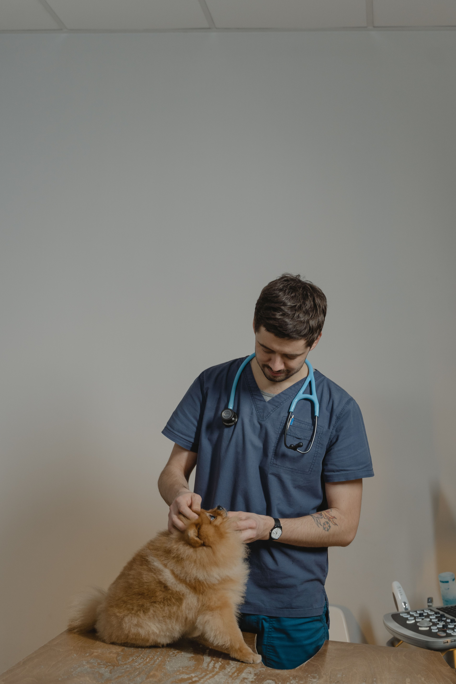
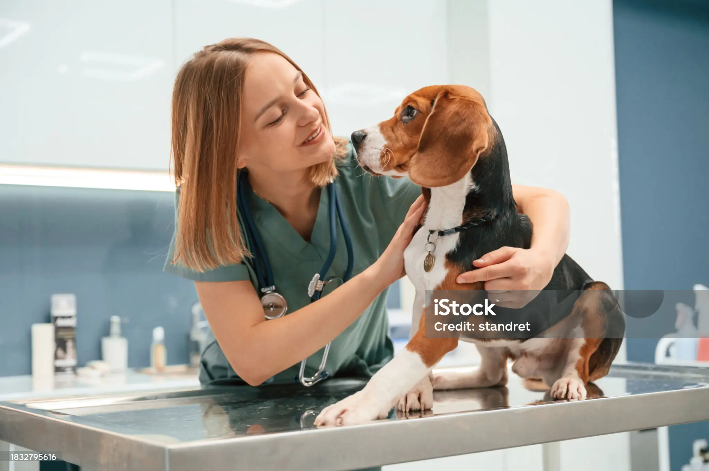
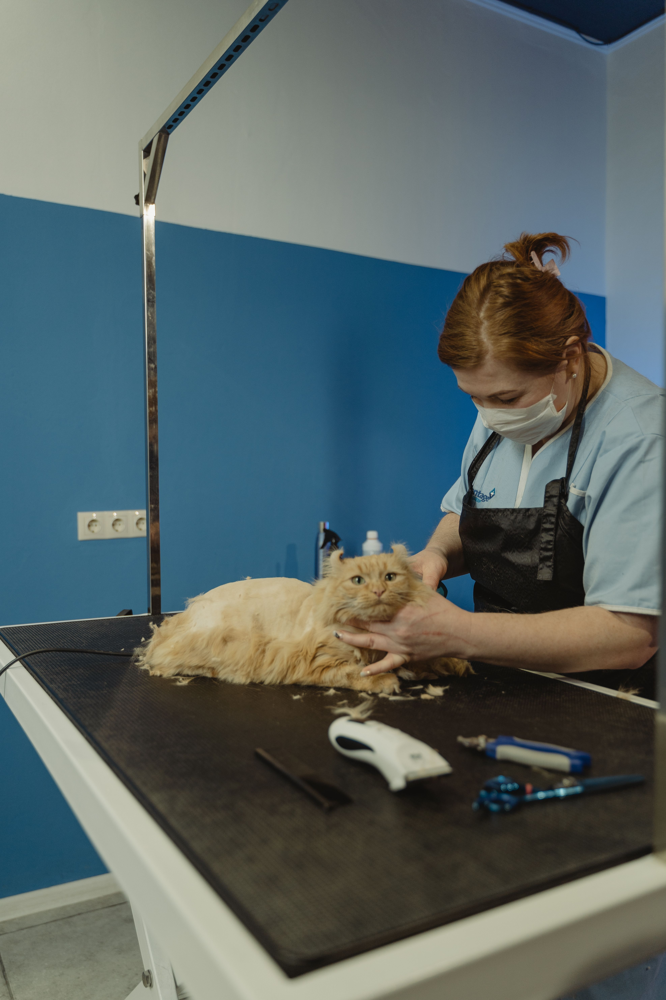

Dra. Mansilla Luciana
Medicina ClínicaEspecialista en atención clínica y medicina preventiva de pequeños animales.
Conocé a los profesionales que cuidan la salud de tus mascotas.
Especialista en atención clínica y medicina preventiva de pequeños animales.

Profesional dedicado a cirugía general y atención integral de perros y gatos.

Atención y diagnóstico de enfermedades dermatológicas en animales de compañía.

Peluquera profesional especializada en el cuidado y estética de mascotas, brindando servicios de corte, baño y estilizado.